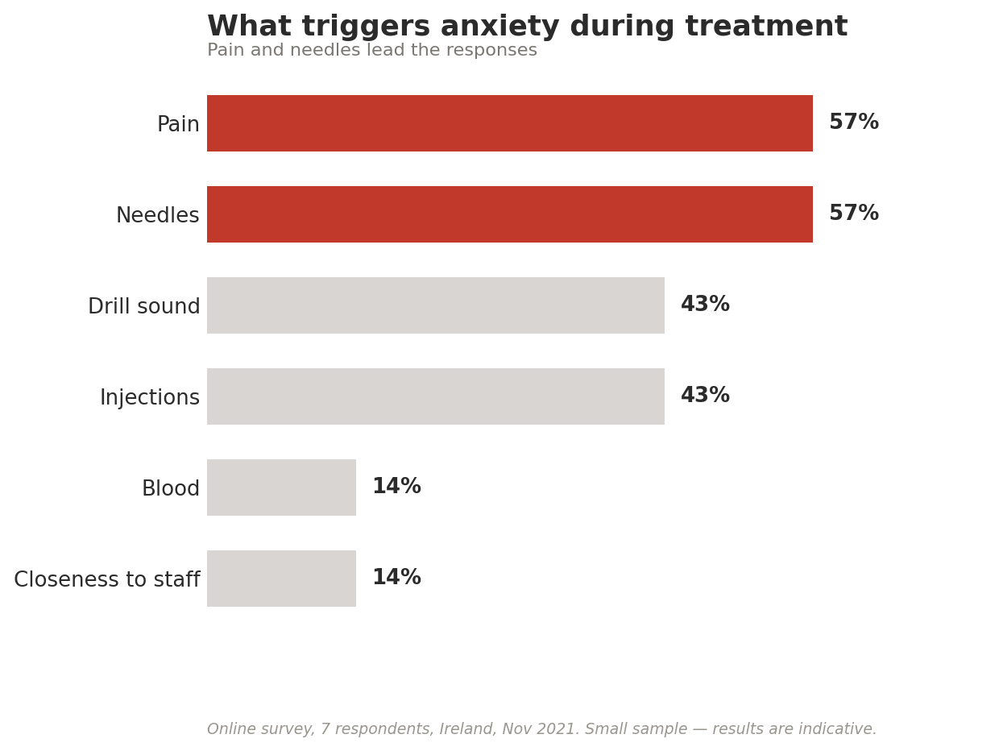
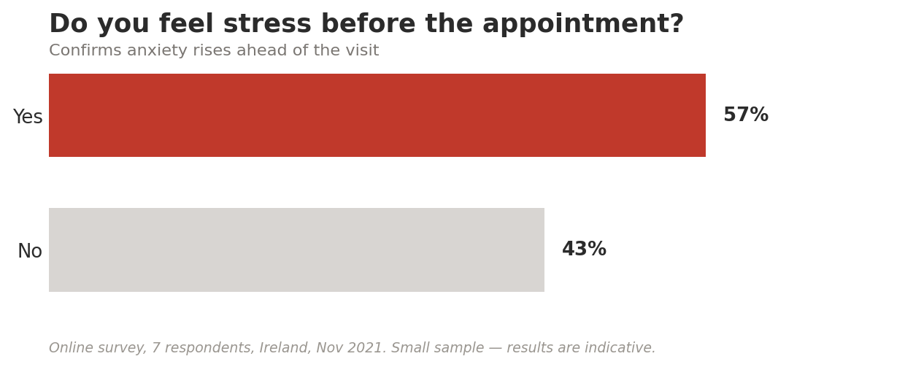
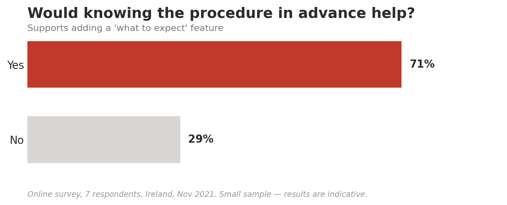
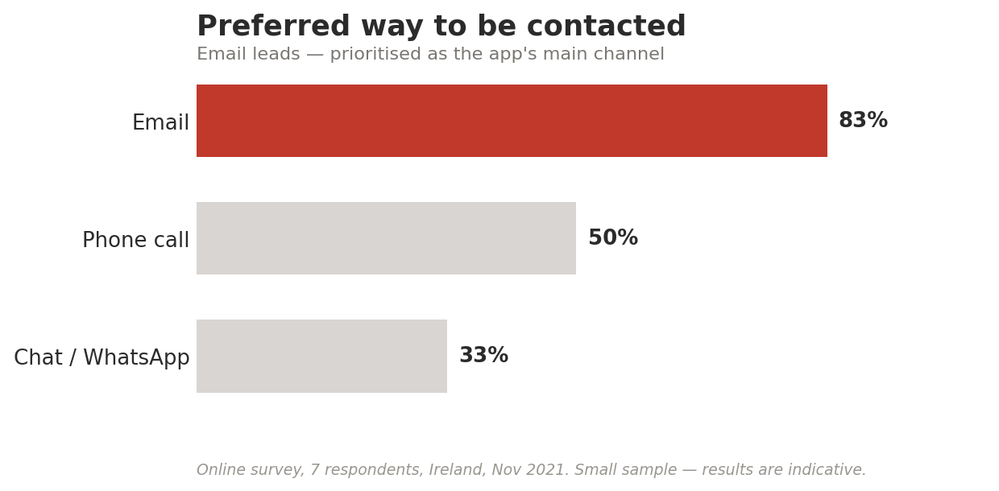

UX Case Study
Dental Anxiety App
A mobile app that helps people with low-to-mild dental anxiety feel accompanied and in control — before, during and after treatment.
PROJECT
For my user-centred design module at DCU, I designed a mobile app to support people living with low-to-mild dental anxiety — a fear that affects around 20% of people in Ireland and keeps many of them away from the dentist. My role was to design an experience that helps anxious patients feel accompanied and in control, grounding every decision in real research.
OBJECTIVE
Once they are in the chair, anxious patients often can't communicate their pain or fear, so they avoid treatment altogether. My objective was to give them back a sense of control, and to open honest communication between the patient and the dental team — turning a feared appointment into one where the patient feels understood.
PROCESS
I followed the Double Diamond framework: Discover, Define, Develop and Deliver. I grounded the work in academic research on dental anxiety, ran an online survey with people in Ireland, and interviewed a practising dentist to keep my solutions close to real clinical practice. From the findings I built a persona — John, whose trigger was a past painful experience — and mapped the five factors that matter most to anxious patients, with loss of control at the top.
RESULTS
The research pointed to one clear insight: control is the single most powerful factor in lowering anxiety. My main design response was the Comfort Scale — a feature that lets the patient tap their phone to signal discomfort without speaking. Hearts change colour like a traffic light: red to stop, amber as stress rises, green to continue — shown to the dentist on screen or as audio.
REFLECTION
This project taught me to design for people at their most vulnerable. Working within real constraints — a patient who can't speak, a fast-paced clinical environment — pushed me to keep the interface simple and the feedback instant. My biggest takeaway was that the strongest UX decisions come from listening closely to both the data and the human behind it.



